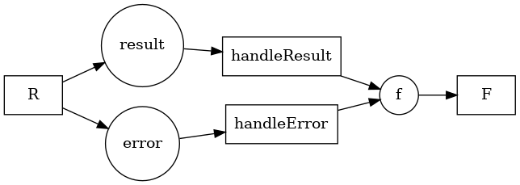

@siiky 2022/08/19 2022/08/19
Following the call with Statebox from last week I sent an email with some questions. One of them was if/how they're thinking of (formally & technically) dealing with "OR transitions".
I first read about "OR transitions" in the paper "The Application of Petri Nets to Workflow Management" (#004; "conditional routing"). In more detail (including the places between transitions), an "OR transition" is a transition that produces tokens to only one of its output places. I think this is useful to model computations that may fail (e.g. non-total functions) or that produce values from distinct subsets ("good"/"bad"). For example: subtracting in the naturals; dividing; making a web request (HTTP 4xx/5xx, timeouts, ...); determining if a value satisfies a property or not (x >= 42); ...
In the end, OR transitions aren't necessary -- we're used to doing these things in code already. It may not even make sense or be worth the effort sometimes to model the alternatives, but there are certainly cases where it would be useful. I talked about it with my TL and we got a workaround, like a boilerplate pattern.
Some names: let's say the OR transition is called R, the "good case" place & transition are result & T, and the "bad case" are error & C. T and C produce a token in f, which is to be consumed by a single transition F.

First, R must be modified to produce an Either Error Result token, duplicated in each of the output places (result & error). The good and bad places remain the same. T and C must be modified to produce a token in a single (common) place (let's call it m, for middleman), and their types must change from:
T :: Result -> Result'
C :: Error -> Error'
To:
T :: Either Error Result -> Maybe (Either Error Result)
C :: Either Error Result -> Maybe (Either Error' Result')
T and C must do nothing (i.e. return Nothing) for the cases they aren't supposed to handle. So T should return Nothing if the value is an Error, and C should return Nothing if the value is a Result. In the case they're supposed to handle they work as before these boilerplate changes, except they must rewrap it in the Either and in a Just (more details in code shortly).
Finally, an extra transition (let's call it M, for merge) must be added with m as its input place of multiplicity 2 (the number of the output places of R). M should filter out the Nothings, pick the only Just, and produce it (unwrapped) in f. In theory, F doesn't need to know about this dance.

Generally, the pattern goes like this:

Algebraically, in pseudo-Haskell (note on notaion afterwards):
R : () -> (A1 + A2 + ... + An)^n
ak : (A1 + A2 + ... + An)
T'k : (A1 + A2 + ... + An) -> Maybe (A'1 + A'2 + ... + A'n)
M : Maybe (A'1 + A'2 + ... + A'n)^n -> ()
unSingle [a] = a
M = fromJust . unSingle . filter isJust
N = const Nothing
J = Just
Tk : Ak -> A'k
hk = J . ik . Tk
T'k = [N, N, ..., hk, ..., N, N]
(NOTE: The A + B notation is coproduct of A and B; ik is coproduct injection; and [f, g, ...] is not the usual list notation but the coproduct "either", e.g. [f, g] (i1 x) = f x; [f, g] (i2 x) = g x)
For the simpler success/failure case, if R produces tokens of type Either Error Result:
handleResult' = [J . Right . handleResult, N]
handleError' = [N, J . Left . handleError]
And thus I will end this log. Let's see what Statebox replies.